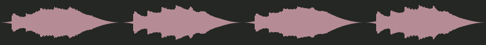
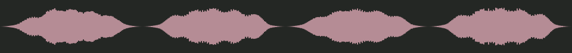
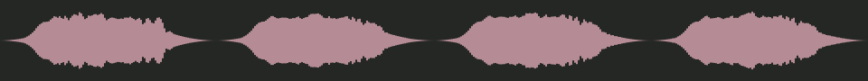
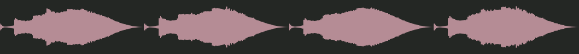

Riftlight · listening review
One five-note thread: D–F–A–G–E. Listen quietly, then compare the regional voices. Music repeats; playing one pauses the others.
riftlight theme
The five-note D–F–A–G–E rift motif stated plainly over warm strings and a soft glassy shimmer. Curious, a little wondering, gentle enough to talk over.

40s · 569 KiB · RMS 0.055 · seam 0.00000
riftlight paths
Slow, cold and still: sustained low tones, ice-like bell overtones, the D–F–A–G–E rift motif carried by a low voice. Memory and patience.

40s · 565 KiB · RMS 0.055 · seam 0.00000
riftlight sky
Airy and drifting: high breathy winds, slow swells like distant whale song, the D–F–A–G–E rift motif floating in and out.

40s · 407 KiB · RMS 0.055 · seam 0.00001
riftlight coast
Brackish and restless: low reeds, a slightly uneven pulse, wet percussion, the D–F–A–G–E rift motif slipping in rhythm.

40s · 579 KiB · RMS 0.055 · seam 0.00000